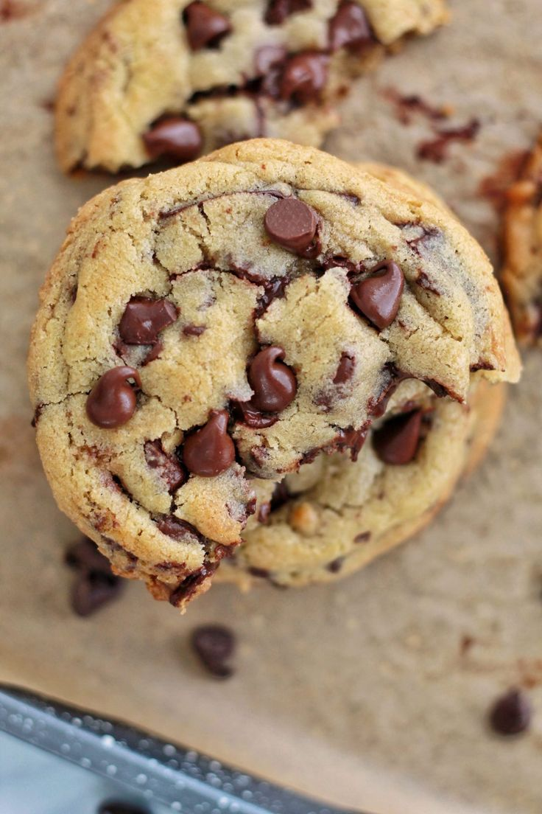
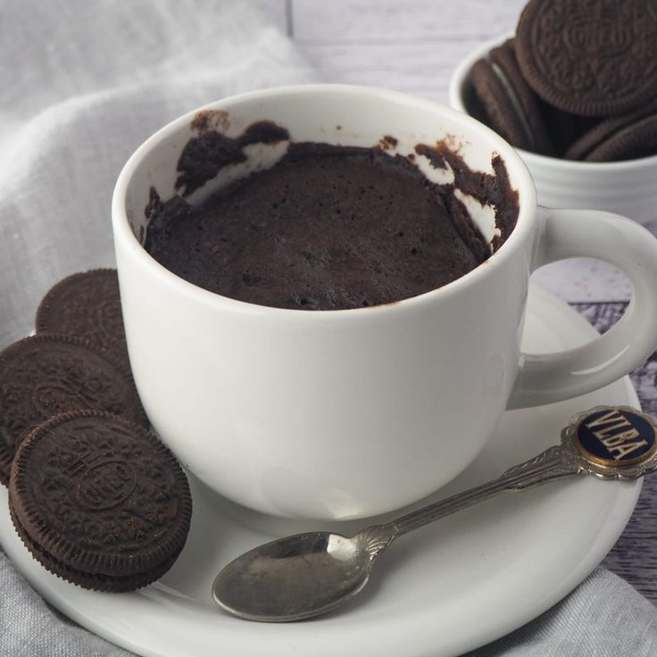

Chocolate Chip Cookies
Ingredients:
- 1 stick of butter (warm, not melted)
- 1 cup dark brown sugar
- 1 cup granulated sugar
- 2 eggs
- 1 tbsp vanilla extract
- 3 cups flour
- 1 tsp baking soda
- 1/2 tsp baking powder
- 1 1/2 tsp salt
- ~2 cups chocolate chips (add as much as you want!)
Instructions:
- Preheat the oven to 375°F.
- Mix the warm butter with both sugars in a bowl until clumpy.
- Add eggs and vanilla; mix until smooth.
- Add the dry ingredients and mix well to form the dough.
- Stir in chocolate chips, then roll dough into balls and place on a parchment-lined baking sheet.
- Bake for 15 minutes. Cool or enjoy fresh from the oven!

Homemade Cinnamon Rolls
Dough:
- 2 cups flour
- 2 1/4 tsp baking powder
- 3 tbsp granulated sugar
- 1/2 tsp cinnamon
- 1/2 tsp salt
- 3/4 cup milk
- 3 tbsp butter
Filling:
- 1/2 cup light brown sugar
- 2 1/2 tsp cinnamon
- 1 tbsp butter (melted)
Frosting:
- 4 oz cream cheese
- 4 tbsp butter
- 1 tsp vanilla extract
- 3/4 cup confectioners sugar
Instructions:
- Microwave milk and butter together, then mix with dry dough ingredients in a large bowl.
- Knead gently, cover with a damp towel, and let rest for 15 minutes.
- Meanwhile, preheat oven to 350°F, grease your baking pan, and mix the filling ingredients.
- Roll out dough on a floured surface, spread the filling, then roll it up and slice into rolls.
- Place rolls in the pan and bake for 25–30 minutes until golden.
- While baking, heat the frosting ingredients slightly and mix well.
- Frost the rolls after baking and enjoy warm!

Oreo Mug Cake (Beginner-Friendly Treat)
Ingredients:
- 5 Oreo cookies
- 1/4 cup milk
- 1 tbsp granulated sugar
- 1 tbsp flour
- 1/2 tsp baking powder
- 1 tsp cocoa powder
Instructions:
- In a mug, crush 4 Oreos into the milk until chunky and chocolatey.
- Add sugar, flour, baking powder, and cocoa powder. Mix thoroughly.
- Press the 5th Oreo into the center of the batter.
- Microwave for 90 seconds. Let cool before enjoying!

Baking Tips
- Use room temperature ingredients for smoother mixing and better texture.
- Always preheat your oven before baking — timing and temperature matter!
- Don't overmix your dough, especially for cookies and cakes, or it may become tough.
- Let your baked goods cool before applying frosting or cutting.
- Test your baked goods with a toothpick—if it comes out clean, it’s done!
Share Your Thoughts!
Thanks for your comment! 🧁